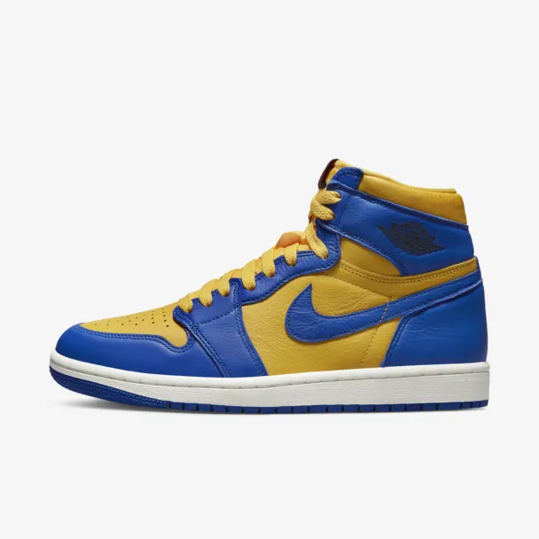

Air Jordan 1
White Cement
Знову, зі ставленням. Цей AJ1 повернувся з версією оригіналу "White Cement", а дика харизма та пихатість, що порушує традиції, досягли нових висот. Виготовлений зі шкіри преміум-класу, з принтом слона та культовою кольоровою гамою, яку ви знаєте з AJ3, він передає багато культового баскетбольного стилю Jordan. Тебе карають за такий гарний вигляд? Ви дізнаєтесь.
| 36 | 36.5 |
| 37 | 37.5 |
| 38 | 38.5 |
| 39 | 39.5 |
| 40 | 40.5 |